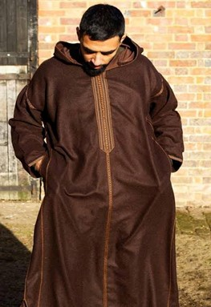
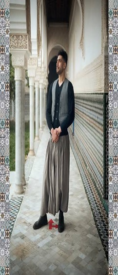
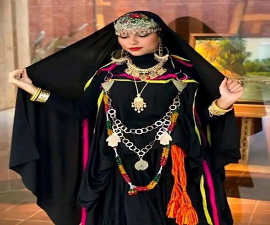
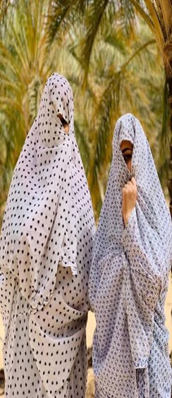

اللباس التقليدي لوادي سوف
يروي قصة الأجداد ويحفظ روح الصحراء في كل خيط ونقشة.

القشابية
هي لباس شتوي تقليدي رجالي عبارة عن معطف طويل ذي قلنسوة مصنوع يدويا من صوف الابل او الاغنام يشتهر بلونه الطبيعي (غالبا بني)

سروال الدلدولة
سروال فضفاض رجالي تقليدي في وادي سوف، يصل للكاحل غالبًا، مصنوع من القطن أو الصوف الخفيف، يُرتدى مع القفطان أو القميص، ويتميز بالراحة ويعكس أصالة الزي الصحراوي للرجال.

الحولي
الحولي هو لباس نسوي تقليدي في وادي سوف، عبارة عن عباءة طويلة ووشاح يغطي الجسم بالكامل، مصنوع من أقمشة خفيفة أو مطرزة، يعكس الهوية الثقافية للمرأة السوفية ويحميها من حرارة الشمس والرمال.

الحايك
الحايك السوفي، والمعروف محلياً في منطقة وادي سوف بـ "اللحاف"، هو لباس تقليدي أصيل يمثل رمزاً للهوية والعفة للمرأة السوفية.